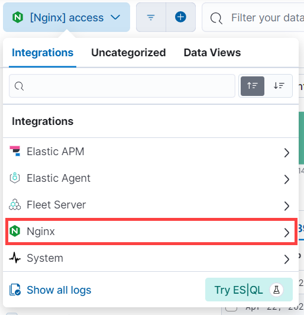

Monitor nginx: Observe the logs and metrics of your nginx instancesedit
Use the Nginx Elastic integration and the Elastic Agent to collect valuable metrics and logs from your nginx instances. Then, use built-in dashboards and tools like Logs Explorer in Kibana allow you to visualize and monitor your nginx data from one place. This data provides valuable insight into your nginx instances—for example:
- A spike in error logs for a certain resource may mean you have a deleted resource that is still needed.
- Access logs can show when a service’s peak times are, and, from this, when it might be best to perform things like maintenance.
- A sudden spike in client requests may point to something malicious, like a DDoS attack.
What you’ll learnedit
This guide walks you through using Elastic Observability to monitor your nginx instances, including:
- Collecting logs and metrics from nginx instances using an Elastic Agent and the nginx integration.
- Centralizing the data in the Elastic Stack.
- Exploring the data in real time using tailored dashboards and Observability UIs.
Data typesedit
The nginx integration collects both logs and metrics.
|
Logs |
Collect logs to keep a record of events that happen in your nginx instances like when client requests and errors occur. Access logs provide information about each request processed by the nginx server. Use these logs for troubleshooting, monitoring performance, and analyzing user behavior. Error logs provide diagnostic information about errors that occur when the nginx server is handling requests. Use these logs to understand why errors occur, assess error impact, and debug issues. |
|
Metrics |
Collect metrics for insight into the state of your nginx instances. This includes information like the total number of active client connections by status, the total number of client requests, and more. Use these metrics to monitor server load, detect bottlenecks, understand client behavior, and plan for capacity. |
Before you beginedit
Before you can monitor nginx, you need the following:
- Elasticsearch for storing and searching your observability data
- Kibana for visualizing and managing it.
- If you want to collect metrics, make sure your nginx instance is configured for metric collection.
Step 1: Add the nginx integrationedit
Follow these steps to add the nginx integration to your deployment:
- Select Add integrations from your deployment’s homepage.
- Enter "nginx" in the search bar, and select the Nginx integration.
- Select Add Nginx at the top of the integration page.
- Select Add integration only (skip agent installation) at the bottom of the page.
Step 2: Configure the nginx integrationedit
The nginx integration can fetch different logs and metrics from your nginx instances. From the Add Nginx integration page, configure which logs and metrics you want the integration to collect. Refer to the following sections for more information on configuring the integration.
Collect logsedit
The nginx integration can collect access logs and error logs.
- Access logs: Turn this option on to collect logs about client requests.
- Error logs: Turn this option on to collect logs about issues nginx encounters with varying severity levels.
Configure the following for both access logs and error logs:
|
Paths |
The location of your logs. |
|
Preserve original event |
Turn on to add a raw copy of the original event to the |
Collect metricsedit
The nginx integration collects stub_status metrics from your instances.
Make sure your nginx instance is configured for metric collection.
Configure the following to collect metrics:
|
Hosts |
The address of the server that Elastic will connect to for collecting metrics. |
|
Period |
How frequently to poll for metrics. The default is every 10 seconds. |
Step 3: Add Elastic Agentedit
After you’ve configured your integration, you need to add an Elastic Agent to your host to collect data and send it to the Elastic Stack. You have two options for adding the Elastic Agent, enroll in Fleet or run standalone.
|
Enrolling in Fleet lets you automatically deploy updates and centrally manage the agent. |
|
|
Standalone agents need to be manually updated on the host where the agent is installed. |
For more on
Enroll in Fleetedit
Follow the instructions from the Add agent screen to install the Elastic Agent on your host:
- Under Enroll in Fleet?, make sure Enroll in Fleet is selected.
- Under Install Elastic Agent on your host, copy the command for your system and run it on your host. You can reuse the command on multiple hosts.
- After the agent starts on your host, you’ll see confirmation that the agent was enrolled in Fleet.
Run standalone Elastic Agentedit
Before installing and running the standalone Elastic Agent, you need to create an API key. To create an Elastic Cloud API key:
- From the Kibana menu, go to Stack Management → API keys.
- Select Create API key.
-
Give the key a name. For example,
nginx API key. - Leave the other default options and select Create API key.
-
In the Create API key confirmation dialog, change the dropdown menu setting from
EncodedtoBeats. This sets the API key format for communication between Elastic Agent (which is based on Beats) and Elasticsearch. - Copy the generated API key and store it in a safe place.
After creating your API key, follow the instructions from the Add agent screen to install the Elastic Agent on your host:
- Under Enroll in Fleet?, select Run standalone.
-
Under Configure the agent, select Download Policy. Save the
elastic-agent.ymlfile to a directory on the host where you’ll install nginx for monitoring. -
Open the policy file and notice that it contains all of the input, output, and other settings for the nginx and System integrations.
Replace:
username: '${ES_USERNAME}' password: '${ES_PASSWORD}'with:
api_key: '<your-api-key>'
Where
your-api-keyis the key you created previously in this section.If you already have a standalone agent installed on a host with an existing Elastic Agent policy, add the settings from the Configure the agent step to your existing
elastic-agent.ymlfile. - Under Install Elastic Agent on your host, select the tab for your host operating system and run the commands on your host.
-
If you’re prompted with
Elastic Agent will be installed at {installation location} and will run as a service. Do you want to continue?answerYes.If you’re prompted with
Do you want to enroll this Agent into Fleet?answerno. -
Run the
statuscommand to confirm that Elastic Agent is running.elastic-agent status ┌─ fleet │ └─ status: (STOPPED) Not enrolled into Fleet └─ elastic-agent └─ status: (HEALTHY) Running
Step 4: Explore your logs and metricsedit
Use Kibana to view the metric and log data collected by Elastic Agent. Refer to the following sections for more information on viewing your data:
View metricsedit
The nginx integration has a built-in dashboard that shows the full picture of your nginx metrics in one place. To open the nginx dashboard:
- Open the Kibana menu and go to Management → Integrations → Installed integrations.
- Select the Nginx card and open the Assets tab.
-
Select either the
[Metrics Nginx] Overviewdashboard.
The Metrics Nginx overview shows visual representations of total requests, processed requests, heartbeat/up, active connections, reading/writing/waiting rates, request rate, accepts and handled rates, and drops rate.
View logsedit
After your nginx logs are ingested, view and explore your logs using Logs Explorer or the Nginx logs dashboards.
Logs Exploreredit
With Logs Explorer, you can quickly search and filter your log data, get information about the structure of log fields, and display your findings in a visualization. To view nginx logs, open Kibana and go to Observability → Logs Explorer.
Filter your results to see logs from the nginx integration from the data selector:
-
Under Integrations, select Nginx.
 - Select either access logs or error logs to view the logs you’re looking for.
The Documents table now shows your nginx logs:
Nginx logs dashboardsedit
The nginx integration has built-in dashboards that show the full picture of your nginx logs in one place. To open the nginx dashboards:
- Open the Kibana menu and go to Management → Integrations → Installed integrations.
- Select the Nginx card and open the Assets tab.
-
Select either the
[Logs Nginx] Overviewdashboard or the[Logs Nginx] Access and error logsdashboard.
The Nginx logs overview dashboard shows visual representations of geographical log details, response codes over time, errors over time, the top pages sending logs, data volume, a breakdown of which operating systems are sending logs, and a breakdown of which browsers are sending logs.

The Nginx access and error logs dashboard shows your access logs over time, and lists your access and error logs.